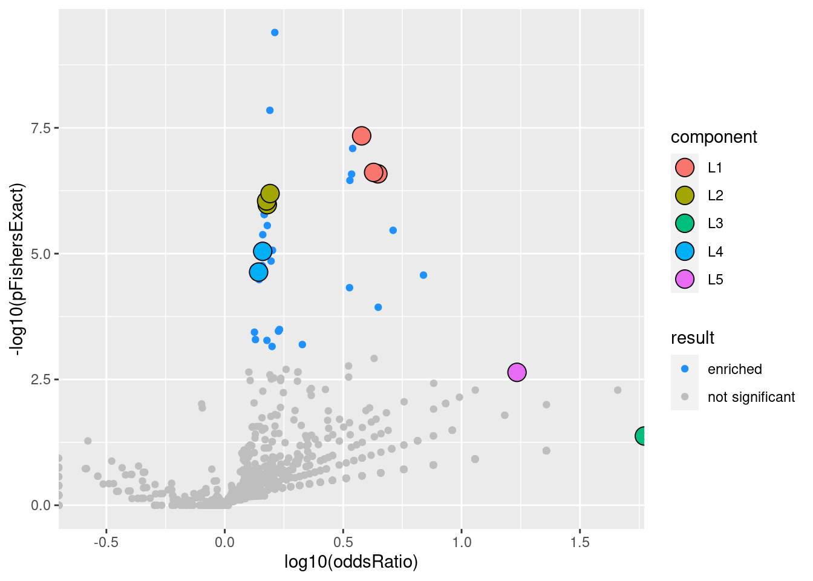

Pathways selection using Susie
XSun
2024-01-25
Last updated: 2024-01-25
Checks: 6 1
Knit directory: multigroup_ctwas_analysis/
This reproducible R Markdown analysis was created with workflowr (version 1.7.1). The Checks tab describes the reproducibility checks that were applied when the results were created. The Past versions tab lists the development history.
The R Markdown is untracked by Git. To know which version of the R Markdown file created these results, you’ll want to first commit it to the Git repo. If you’re still working on the analysis, you can ignore this warning. When you’re finished, you can run wflow_publish to commit the R Markdown file and build the HTML.
Great job! The global environment was empty. Objects defined in the global environment can affect the analysis in your R Markdown file in unknown ways. For reproduciblity it’s best to always run the code in an empty environment.
The command set.seed(20231112) was run prior to running the code in the R Markdown file. Setting a seed ensures that any results that rely on randomness, e.g. subsampling or permutations, are reproducible.
Great job! Recording the operating system, R version, and package versions is critical for reproducibility.
Nice! There were no cached chunks for this analysis, so you can be confident that you successfully produced the results during this run.
Great job! Using relative paths to the files within your workflowr project makes it easier to run your code on other machines.
Great! You are using Git for version control. Tracking code development and connecting the code version to the results is critical for reproducibility.
The results in this page were generated with repository version 7561eb8. See the Past versions tab to see a history of the changes made to the R Markdown and HTML files.
Note that you need to be careful to ensure that all relevant files for the analysis have been committed to Git prior to generating the results (you can use wflow_publish or wflow_git_commit). workflowr only checks the R Markdown file, but you know if there are other scripts or data files that it depends on. Below is the status of the Git repository when the results were generated:
Ignored files:
Ignored: .Rhistory
Untracked files:
Untracked: analysis/CopyOfmulti_tissue_ldmerge_validation.Rmd
Untracked: analysis/multi_tissue_ldmerge_validation_susie_fit.Rmd
Untracked: analysis/multi_tissue_ldmerge_validation_xgboost_fit.Rmd
Unstaged changes:
Modified: analysis/multi_tissue_ldmerge_validation.Rmd
Note that any generated files, e.g. HTML, png, CSS, etc., are not included in this status report because it is ok for generated content to have uncommitted changes.
There are no past versions. Publish this analysis with wflow_publish() to start tracking its development.
Overview
The model is \(y=X*w\)
y is an n-dimensional vector representing gene-trait associations (n = number of genes), which can be:
- z-scores computed by MAGMA
- a binary vector indicating gene-trait relationships (genes with FDR < 0.05 as per MAGMA are marked 1).
If y is a z-score vector, it can be fitted using linear Susie
If y is a binarized vector, the model can be fitted using logistic Susie
Functions
library(gseasusie)
library(tidyverse)
library(GO.db)
color_sign = function(value) {
if (value > 0) {
color <- "#008000"
} else if (value < 0) {
color <- "#e00000"
} else {
color <- "#777"
}
list(color = color)
}
getGOTermName <- function(go_id) {
result <- try(Term(GOTERM[[go_id]]), silent = TRUE)
if (class(result) == "try-error") {
return(NA)
} else {
return(result)
}
}
getKEGGPathwayName <- function(kegg_id) {
result <- try(KEGGREST::keggGet(kegg_id)[[1]]$NAME, silent = TRUE)
if (class(result) == "try-error") {
return(NA)
} else {
return(result)
}
}
interactive_table_linear_susie <- function(fit, ora) {
fit <- fit
ora <- ora
res <- gseasusie:::get_gene_set_summary(fit) %>%
dplyr::left_join(ora)
coef <- susieR::coef.susie(fit)
coef <- as.data.frame(cbind(names(coef), coef))
colnames(coef) <- c("pwy", "beta")
rownames(coef) <- seq(1,nrow(coef),by=1)
res_updated <- res %>%
# Ensure 'beta' in 'res' is of type double
mutate(beta = as.numeric(beta)) %>%
left_join(coef %>%
# Ensure 'beta' in 'coef' is of type double
mutate(beta = as.numeric(beta)),
by = c("geneSet" = "pwy")) %>%
# Combine the two 'beta' columns, choosing 'coef' values first
mutate(beta = coalesce(beta.y, beta.x)) %>%
# Explicitly use `select` from `dplyr`
dplyr::select(-beta.y, -beta.x)
res <- res_updated
csdat <- gseasusie:::get_credible_set_summary(fit) %>%
dplyr::left_join(ora) %>%
dplyr::filter(in_cs, active_cs) %>%
dplyr::select(geneSet, component, in_cs) %>%
distinct()
dt <- res %>%
dplyr::filter(overlap > 0) %>%
dplyr::mutate(
logOddsRatio = log(oddsRatio),
nlog10pFishersExact = -log10(pFishersExact)
) %>%
dplyr::left_join(csdat) %>%
dplyr::arrange(dplyr::desc(nlog10pFishersExact)) %>%
dplyr::mutate(
fisherRank = dplyr::row_number(),
in_cs = dplyr::if_else(is.na(in_cs), FALSE, in_cs)) %>%
dplyr::select(geneSet, beta, pip, overlap, geneSetSize, logOddsRatio, nlog10pFishersExact, in_cs, component, fisherRank) %>%
dplyr::mutate(dplyr::across(!where(is.numeric) , as.factor))
if(grepl("GO",dt$geneSet[1])) {
dt <- dt %>%
dplyr::filter(!is.na(component)) %>% #### only show CS
dplyr::mutate(goTermName = sapply(as.character(geneSet), getGOTermName)) %>% # extract Go term names
dplyr::select(geneSet, goTermName, everything()) # re-order
}else if (grepl("hsa",dt$geneSet[1])) {
dt <- dt %>%
dplyr::filter(!is.na(component)) %>% #### only show CS
dplyr::mutate(KEGGPathwayName = sapply(as.character(geneSet), getKEGGPathwayName)) %>% # extract Go term names
dplyr::select(geneSet, KEGGPathwayName, everything()) # re-order
}
# dt %>%
# dplyr::select(-c(in_cs)) %>%
# reactable::reactable(
# filterable=TRUE,
# minRows=1,
# columns = list(
# pip = reactable::colDef(format = reactable::colFormat(digits = 3)),
# logOddsRatio = reactable::colDef(style= function(value){color_sign(value)},
# format = reactable::colFormat(digits = 3)),
# beta = reactable::colDef(style= function(value){color_sign(value)},
# format = reactable::colFormat(digits = 3)),
# nlog10pFishersExact = reactable::colDef(format = reactable::colFormat(digits = 3))
# ),
# rowStyle = function(index){
# if(dt$in_cs[index] == TRUE){
# list(background = "#e5f5e0")
# }
# },
# defaultSorted = list(nlog10pFishersExact='desc')
# )
#
DT::datatable(dt,options = list(pageLength=10))
}
interactive_table_logistic_susie <- function(fit, ora) {
fit <- fit
ora <- ora
res <- gseasusie:::get_gene_set_summary(fit) %>%
dplyr::left_join(ora)
csdat <- gseasusie:::get_credible_set_summary(fit) %>%
dplyr::left_join(ora) %>%
dplyr::filter(in_cs, active_cs) %>%
dplyr::select(geneSet, component, in_cs) %>%
distinct()
dt <- res %>%
dplyr::filter(overlap > 0) %>%
dplyr::mutate(
logOddsRatio = log(oddsRatio),
nlog10pFishersExact = -log10(pFishersExact)
) %>%
dplyr::left_join(csdat) %>%
dplyr::arrange(dplyr::desc(nlog10pFishersExact)) %>%
dplyr::mutate(
fisherRank = dplyr::row_number(),
in_cs = dplyr::if_else(is.na(in_cs), FALSE, in_cs)) %>%
dplyr::select(geneSet, beta, pip, overlap, geneSetSize, logOddsRatio, nlog10pFishersExact, in_cs, component, fisherRank) %>%
dplyr::mutate(dplyr::across(!where(is.numeric) , as.factor))
if(grepl("GO",dt$geneSet[1])) {
dt <- dt %>%
dplyr::filter(!is.na(component)) %>% #### only show CS
dplyr::mutate(goTermName = sapply(as.character(geneSet), getGOTermName)) %>% # extract Go term names
dplyr::select(geneSet, goTermName, everything()) # re-order
}else if (grepl("hsa",dt$geneSet[1])) {
dt <- dt %>%
dplyr::filter(!is.na(component)) %>% #### only show CS
dplyr::mutate(KEGGPathwayName = sapply(as.character(geneSet), getKEGGPathwayName)) %>% # extract Go term names
dplyr::select(geneSet, KEGGPathwayName, everything()) # re-order
}
# dt %>%
# dplyr::select(-c(in_cs)) %>%
# reactable::reactable(
# filterable=TRUE,
# minRows=10,
# columns = list(
# pip = reactable::colDef(format = reactable::colFormat(digits = 3)),
# logOddsRatio = reactable::colDef(style= function(value){color_sign(value)},
# format = reactable::colFormat(digits = 3)),
# beta = reactable::colDef(style= function(value){color_sign(value)},
# format = reactable::colFormat(digits = 3)),
# nlog10pFishersExact = reactable::colDef(format = reactable::colFormat(digits = 3))
# ),
# rowStyle = function(index){
# if(dt$in_cs[index] == TRUE){
# list(background = "#e5f5e0")
# }
# },
# defaultSorted = list(nlog10pFishersExact='desc')
# )
DT::datatable(dt,options = list(pageLength=10))
}aFib-ebi-a-GCST006414
Go Biological Process
Modelling z-scores using Susie
load("/project/xinhe/xsun/ctwas/4.multi_tissue_process/results/susie/aFib-ebi-a-GCST006414_gobp.rdata")
gseasusie::enrichment_volcano(linear.fit, linear.ora)interactive_table_linear_susie(fit = linear.fit, ora = linear.ora)Modelling binarized y using logistic Susie
gseasusie::enrichment_volcano(logistic.fit, logistic.ora)interactive_table_logistic_susie(logistic.fit, logistic.ora)Go Molecular Function
Modelling z-scores using Susie
load("/project/xinhe/xsun/ctwas/4.multi_tissue_process/results/susie/aFib-ebi-a-GCST006414_gomf.rdata")
gseasusie::enrichment_volcano(linear.fit, linear.ora)interactive_table_linear_susie(fit = linear.fit, ora = linear.ora)Modelling binarized y using logistic Susie
gseasusie::enrichment_volcano(logistic.fit, logistic.ora)interactive_table_logistic_susie(logistic.fit, logistic.ora)Go Cellular Component
Modelling z-scores using Susie
load("/project/xinhe/xsun/ctwas/4.multi_tissue_process/results/susie/aFib-ebi-a-GCST006414_gocc.rdata")
gseasusie::enrichment_volcano(linear.fit, linear.ora)
interactive_table_linear_susie(fit = linear.fit, ora = linear.ora)Modelling binarized y using logistic Susie
gseasusie::enrichment_volcano(logistic.fit, logistic.ora)interactive_table_logistic_susie(logistic.fit, logistic.ora)KEGG
Modelling z-scores using Susie
load("/project/xinhe/xsun/ctwas/4.multi_tissue_process/results/susie/aFib-ebi-a-GCST006414_kegg.rdata")
gseasusie::enrichment_volcano(linear.fit, linear.ora)interactive_table_linear_susie(fit = linear.fit, ora = linear.ora)Modelling binarized y using logistic Susie
gseasusie::enrichment_volcano(logistic.fit, logistic.ora)interactive_table_logistic_susie(logistic.fit, logistic.ora)IBD-ebi-a-GCST004131
Go Biological Process
Modelling z-scores using Susie
load("/project/xinhe/xsun/ctwas/4.multi_tissue_process/results/susie/IBD-ebi-a-GCST004131_gobp.rdata")
gseasusie::enrichment_volcano(linear.fit, linear.ora)interactive_table_linear_susie(fit = linear.fit, ora = linear.ora)Modelling binarized y using logistic Susie
gseasusie::enrichment_volcano(logistic.fit, logistic.ora)interactive_table_logistic_susie(logistic.fit, logistic.ora)Go Molecular Function
Modelling z-scores using Susie
load("/project/xinhe/xsun/ctwas/4.multi_tissue_process/results/susie/IBD-ebi-a-GCST004131_gomf.rdata")
gseasusie::enrichment_volcano(linear.fit, linear.ora)interactive_table_linear_susie(fit = linear.fit, ora = linear.ora)Modelling binarized y using logistic Susie
gseasusie::enrichment_volcano(logistic.fit, logistic.ora)interactive_table_logistic_susie(logistic.fit, logistic.ora)Go Cellular Component
Modelling z-scores using Susie
load("/project/xinhe/xsun/ctwas/4.multi_tissue_process/results/susie/IBD-ebi-a-GCST004131_gocc.rdata")
gseasusie::enrichment_volcano(linear.fit, linear.ora)interactive_table_linear_susie(fit = linear.fit, ora = linear.ora)Modelling binarized y using logistic Susie
gseasusie::enrichment_volcano(logistic.fit, logistic.ora)interactive_table_logistic_susie(logistic.fit, logistic.ora)KEGG
Modelling z-scores using Susie
load("/project/xinhe/xsun/ctwas/4.multi_tissue_process/results/susie/IBD-ebi-a-GCST004131_kegg.rdata")
gseasusie::enrichment_volcano(linear.fit, linear.ora)interactive_table_linear_susie(fit = linear.fit, ora = linear.ora)Modelling binarized y using logistic Susie
gseasusie::enrichment_volcano(logistic.fit, logistic.ora)interactive_table_logistic_susie(logistic.fit, logistic.ora)LDL-ukb-d-30780_irnt
Go Biological Process
Modelling z-scores using Susie
load("/project/xinhe/xsun/ctwas/4.multi_tissue_process/results/susie/LDL-ukb-d-30780_irnt_gobp.rdata")
gseasusie::enrichment_volcano(linear.fit, linear.ora)interactive_table_linear_susie(fit = linear.fit, ora = linear.ora)Modelling binarized y using logistic Susie
gseasusie::enrichment_volcano(logistic.fit, logistic.ora)interactive_table_logistic_susie(logistic.fit, logistic.ora)Go Molecular Function
Modelling z-scores using Susie
load("/project/xinhe/xsun/ctwas/4.multi_tissue_process/results/susie/LDL-ukb-d-30780_irnt_gomf.rdata")
gseasusie::enrichment_volcano(linear.fit, linear.ora)interactive_table_linear_susie(fit = linear.fit, ora = linear.ora)Modelling binarized y using logistic Susie
gseasusie::enrichment_volcano(logistic.fit, logistic.ora)interactive_table_logistic_susie(logistic.fit, logistic.ora)Go Cellular Component
Modelling z-scores using Susie
load("/project/xinhe/xsun/ctwas/4.multi_tissue_process/results/susie/LDL-ukb-d-30780_irnt_gocc.rdata")
gseasusie::enrichment_volcano(linear.fit, linear.ora)interactive_table_linear_susie(fit = linear.fit, ora = linear.ora)Modelling binarized y using logistic Susie
gseasusie::enrichment_volcano(logistic.fit, logistic.ora)interactive_table_logistic_susie(logistic.fit, logistic.ora)KEGG
Modelling z-scores using Susie
load("/project/xinhe/xsun/ctwas/4.multi_tissue_process/results/susie/LDL-ukb-d-30780_irnt_kegg.rdata")
gseasusie::enrichment_volcano(linear.fit, linear.ora)interactive_table_linear_susie(fit = linear.fit, ora = linear.ora)Modelling binarized y using logistic Susie
gseasusie::enrichment_volcano(logistic.fit, logistic.ora)interactive_table_logistic_susie(logistic.fit, logistic.ora)SBP-ukb-a-360
Go Biological Process
Modelling z-scores using Susie
load("/project/xinhe/xsun/ctwas/4.multi_tissue_process/results/susie/SBP-ukb-a-360_gobp.rdata")
gseasusie::enrichment_volcano(linear.fit, linear.ora)
interactive_table_linear_susie(fit = linear.fit, ora = linear.ora)Modelling binarized y using logistic Susie
gseasusie::enrichment_volcano(logistic.fit, logistic.ora)interactive_table_logistic_susie(logistic.fit, logistic.ora)Go Molecular Function
Modelling z-scores using Susie
load("/project/xinhe/xsun/ctwas/4.multi_tissue_process/results/susie/SBP-ukb-a-360_gomf.rdata")
gseasusie::enrichment_volcano(linear.fit, linear.ora)interactive_table_linear_susie(fit = linear.fit, ora = linear.ora)Modelling binarized y using logistic Susie
gseasusie::enrichment_volcano(logistic.fit, logistic.ora)interactive_table_logistic_susie(logistic.fit, logistic.ora)Go Cellular Component
Modelling z-scores using Susie
load("/project/xinhe/xsun/ctwas/4.multi_tissue_process/results/susie/SBP-ukb-a-360_gocc.rdata")
gseasusie::enrichment_volcano(linear.fit, linear.ora)interactive_table_linear_susie(fit = linear.fit, ora = linear.ora)Modelling binarized y using logistic Susie
gseasusie::enrichment_volcano(logistic.fit, logistic.ora)interactive_table_logistic_susie(logistic.fit, logistic.ora)KEGG
Modelling z-scores using Susie
load("/project/xinhe/xsun/ctwas/4.multi_tissue_process/results/susie/SBP-ukb-a-360_kegg.rdata")
gseasusie::enrichment_volcano(linear.fit, linear.ora)interactive_table_linear_susie(fit = linear.fit, ora = linear.ora)Modelling binarized y using logistic Susie
gseasusie::enrichment_volcano(logistic.fit, logistic.ora)interactive_table_logistic_susie(logistic.fit, logistic.ora)SCZ-ieu-b-5102
Go Biological Process
Modelling z-scores using Susie
load("/project/xinhe/xsun/ctwas/4.multi_tissue_process/results/susie/SCZ-ieu-b-5102_gobp.rdata")
gseasusie::enrichment_volcano(linear.fit, linear.ora)interactive_table_linear_susie(fit = linear.fit, ora = linear.ora)Modelling binarized y using logistic Susie
gseasusie::enrichment_volcano(logistic.fit, logistic.ora)interactive_table_logistic_susie(logistic.fit, logistic.ora)Go Molecular Function
Modelling z-scores using Susie
load("/project/xinhe/xsun/ctwas/4.multi_tissue_process/results/susie/SCZ-ieu-b-5102_gomf.rdata")
gseasusie::enrichment_volcano(linear.fit, linear.ora)interactive_table_linear_susie(fit = linear.fit, ora = linear.ora)Modelling binarized y using logistic Susie
gseasusie::enrichment_volcano(logistic.fit, logistic.ora)interactive_table_logistic_susie(logistic.fit, logistic.ora)Go Cellular Component
Modelling z-scores using Susie
load("/project/xinhe/xsun/ctwas/4.multi_tissue_process/results/susie/SCZ-ieu-b-5102_gocc.rdata")
gseasusie::enrichment_volcano(linear.fit, linear.ora)interactive_table_linear_susie(fit = linear.fit, ora = linear.ora)Modelling binarized y using logistic Susie
gseasusie::enrichment_volcano(logistic.fit, logistic.ora)interactive_table_logistic_susie(logistic.fit, logistic.ora)KEGG
Modelling z-scores using Susie
load("/project/xinhe/xsun/ctwas/4.multi_tissue_process/results/susie/SCZ-ieu-b-5102_kegg.rdata")
gseasusie::enrichment_volcano(linear.fit, linear.ora)
interactive_table_linear_susie(fit = linear.fit, ora = linear.ora)Modelling binarized y using logistic Susie
gseasusie::enrichment_volcano(logistic.fit, logistic.ora)
interactive_table_logistic_susie(logistic.fit, logistic.ora)WBC-ieu-b-30
Go Biological Process
Modelling z-scores using Susie
load("/project/xinhe/xsun/ctwas/4.multi_tissue_process/results/susie/WBC-ieu-b-30_gobp.rdata")
gseasusie::enrichment_volcano(linear.fit, linear.ora)interactive_table_linear_susie(fit = linear.fit, ora = linear.ora)Modelling binarized y using logistic Susie
gseasusie::enrichment_volcano(logistic.fit, logistic.ora)interactive_table_logistic_susie(logistic.fit, logistic.ora)Go Molecular Function
Modelling z-scores using Susie
load("/project/xinhe/xsun/ctwas/4.multi_tissue_process/results/susie/WBC-ieu-b-30_gomf.rdata")
gseasusie::enrichment_volcano(linear.fit, linear.ora)interactive_table_linear_susie(fit = linear.fit, ora = linear.ora)Modelling binarized y using logistic Susie
gseasusie::enrichment_volcano(logistic.fit, logistic.ora)interactive_table_logistic_susie(logistic.fit, logistic.ora)Go Cellular Component
Modelling z-scores using Susie
load("/project/xinhe/xsun/ctwas/4.multi_tissue_process/results/susie/WBC-ieu-b-30_gocc.rdata")
gseasusie::enrichment_volcano(linear.fit, linear.ora)
interactive_table_linear_susie(fit = linear.fit, ora = linear.ora)Modelling binarized y using logistic Susie
gseasusie::enrichment_volcano(logistic.fit, logistic.ora)interactive_table_logistic_susie(logistic.fit, logistic.ora)KEGG
Modelling z-scores using Susie
load("/project/xinhe/xsun/ctwas/4.multi_tissue_process/results/susie/WBC-ieu-b-30_kegg.rdata")
gseasusie::enrichment_volcano(linear.fit, linear.ora)interactive_table_linear_susie(fit = linear.fit, ora = linear.ora)Modelling binarized y using logistic Susie
gseasusie::enrichment_volcano(logistic.fit, logistic.ora)interactive_table_logistic_susie(logistic.fit, logistic.ora)
sessionInfo()R version 4.2.0 (2022-04-22)
Platform: x86_64-pc-linux-gnu (64-bit)
Running under: Red Hat Enterprise Linux 8.4 (Ootpa)
Matrix products: default
BLAS/LAPACK: /software/openblas-0.3.13-el8-x86_64/lib/libopenblas_skylakexp-r0.3.13.so
locale:
[1] LC_CTYPE=en_US.UTF-8 LC_NUMERIC=C
[3] LC_TIME=en_US.UTF-8 LC_COLLATE=en_US.UTF-8
[5] LC_MONETARY=en_US.UTF-8 LC_MESSAGES=en_US.UTF-8
[7] LC_PAPER=en_US.UTF-8 LC_NAME=C
[9] LC_ADDRESS=C LC_TELEPHONE=C
[11] LC_MEASUREMENT=en_US.UTF-8 LC_IDENTIFICATION=C
attached base packages:
[1] stats4 stats graphics grDevices utils datasets methods
[8] base
other attached packages:
[1] GO.db_3.16.0 AnnotationDbi_1.60.2 IRanges_2.32.0
[4] S4Vectors_0.36.2 Biobase_2.58.0 BiocGenerics_0.44.0
[7] lubridate_1.9.2 forcats_1.0.0 stringr_1.5.0
[10] dplyr_1.1.2 purrr_1.0.1 readr_2.1.4
[13] tidyr_1.3.0 tibble_3.2.1 ggplot2_3.4.2
[16] tidyverse_2.0.0 gseasusie_0.0.0.9000
loaded via a namespace (and not attached):
[1] bitops_1.0-7 matrixStats_1.2.0 fs_1.5.2
[4] bit64_4.0.5 httr_1.4.7 rprojroot_2.0.3
[7] GenomeInfoDb_1.34.9 data.tree_1.1.0 tools_4.2.0
[10] bslib_0.3.1 DT_0.22 irlba_2.3.5
[13] utf8_1.2.2 R6_2.5.1 DBI_1.1.2
[16] colorspace_2.0-3 withr_2.5.0 tidyselect_1.2.0
[19] curl_4.3.2 bit_4.0.4 compiler_4.2.0
[22] git2r_0.30.1 VEB.Boost_0.0.0.9039 cli_3.6.2
[25] labeling_0.4.2 sass_0.4.1 scales_1.2.0
[28] mvtnorm_1.2-4 mixsqp_0.3-48 digest_0.6.29
[31] spatstat.utils_3.0-1 rmarkdown_2.21 XVector_0.38.0
[34] pkgconfig_2.0.3 htmltools_0.5.7 highr_0.9
[37] fastmap_1.1.0 htmlwidgets_1.6.2 susieR_0.12.40
[40] rlang_1.1.2 rstudioapi_0.14 RSQLite_2.3.1
[43] jquerylib_0.1.4 generics_0.1.3 farver_2.1.0
[46] jsonlite_1.8.7 crosstalk_1.2.0 mr.ash.alpha_0.1-43
[49] RCurl_1.98-1.12 magrittr_2.0.3 GenomeInfoDbData_1.2.9
[52] Matrix_1.6-1.1 Rcpp_1.0.11 munsell_0.5.0
[55] fansi_1.0.3 lifecycle_1.0.4 stringi_1.7.6
[58] yaml_2.3.5 zlibbioc_1.44.0 plyr_1.8.7
[61] grid_4.2.0 blob_1.2.3 parallel_4.2.0
[64] promises_1.2.0.1 crayon_1.5.1 lattice_0.20-45
[67] Biostrings_2.66.0 hms_1.1.3 KEGGREST_1.38.0
[70] knitr_1.42 pillar_1.9.0 glue_1.6.2
[73] evaluate_0.15 emulator_1.2-21 png_0.1-7
[76] vctrs_0.6.1 tzdb_0.3.0 httpuv_1.6.5
[79] gtable_0.3.0 reshape_0.8.9 cachem_1.0.6
[82] xfun_0.38 later_1.3.0 memoise_2.0.1
[85] workflowr_1.7.1 timechange_0.2.0 ellipsis_0.3.2